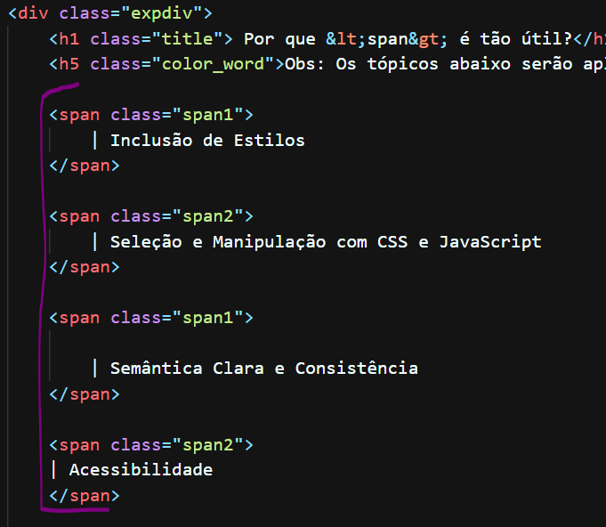

Por que <div> é tão útil?
- Estruturação e Organização
- Layout e Estilo
- Agrupamento de Elementos
- Facilita o CSS e o JavaScript
- Responsividade
Exemplo de div aplicado:

Por que <span> é tão útil?
Obs: Os tópicos abaixo serão aplicados como Span
| Inclusão de Estilos
| Seleção e Manipulação com CSS e JavaScript
| Semântica Clara e Consistência
| Acessibilidade
Exemplo de span aplicado:

Todos os direitos reservados